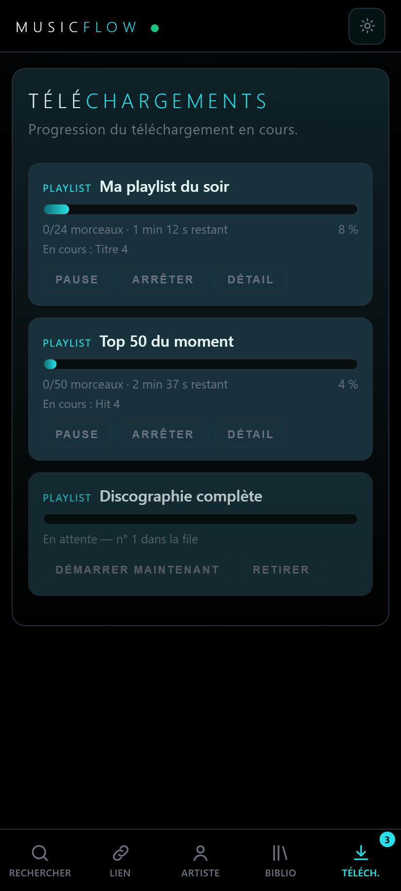
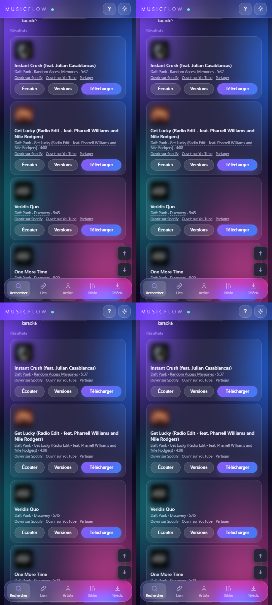
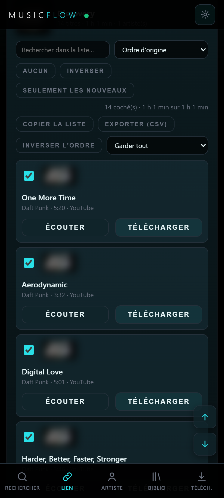
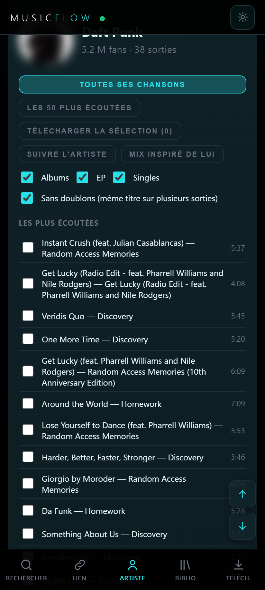
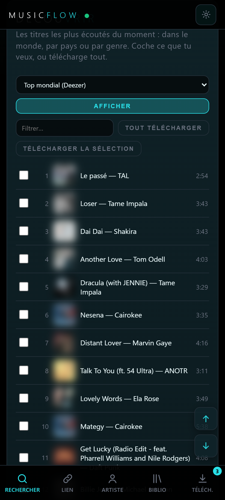
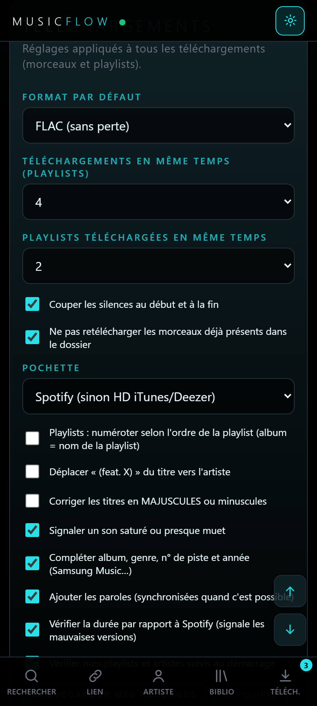
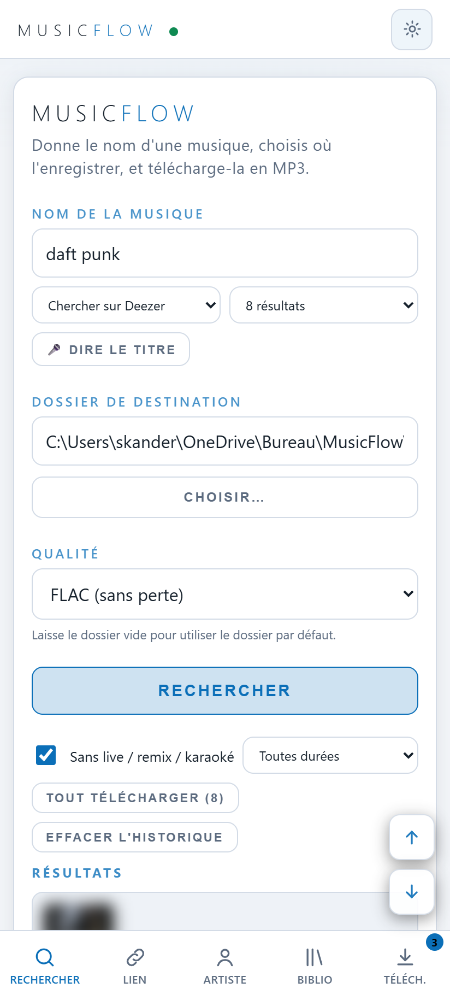
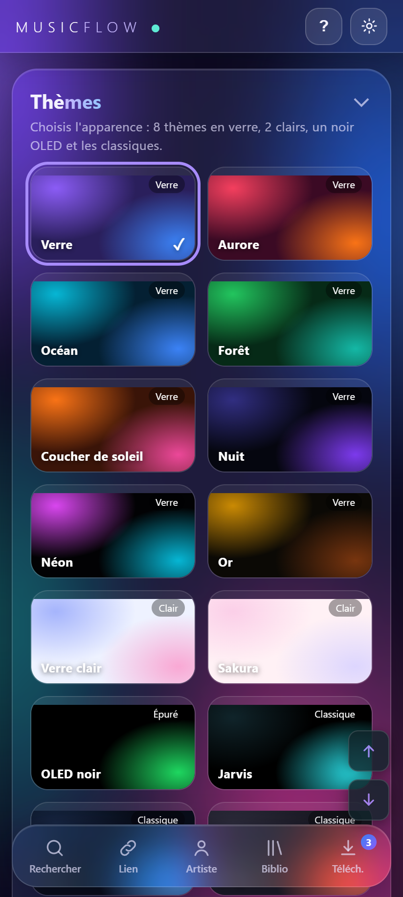

Cherchez un titre, collez un lien de playlist ou choisissez un artiste : MusicFlow télécharge tout avec le bon titre, l'album, la pochette et les paroles.
Version 3.6.2 · Gratuit · open source (GPL-3.0) · sans compte, sans pub · Android 8+ (64 bits) et Windows 10/11

Par titre, par artiste (discographie complète), par lien de playlist ou d'album, ou plusieurs titres d'un coup.
Classements mondiaux, par pays et par genre, playlists populaires, artistes similaires.
Plusieurs playlists en parallèle, pause et reprise, reprise automatique au retour d'internet.
Titre, artiste, album, genre, numéro de piste, année, pochette HD et paroles synchronisées.
Pas sur YouTube ? MusicFlow cherche sur YouTube Music, puis SoundCloud. Les extraits de 30 secondes sont refusés.
Vérification de la durée, versions live et karaoké écartées, comparaison, « autre version » en un geste.
Ce qui est déjà dans votre dossier n'est jamais retéléchargé.
MP3 jusqu'à 320 kbps, FLAC, WAV, Opus, AAC. Silences de début et de fin supprimés.
Favoris, tags, éditeur de tags, re-étiquetage automatique, réduction des gros fichiers.
Suivez une playlist ou un artiste : les nouveaux titres et les sorties sont détectés.
Effet verre, thèmes clairs, noir OLED et automatique, avec un tutoriel interactif sur chaque écran.
Les téléchargements continuent appli fermée et reprennent seuls après une coupure.







MusicFlow.apk.MusicFlow.exe.